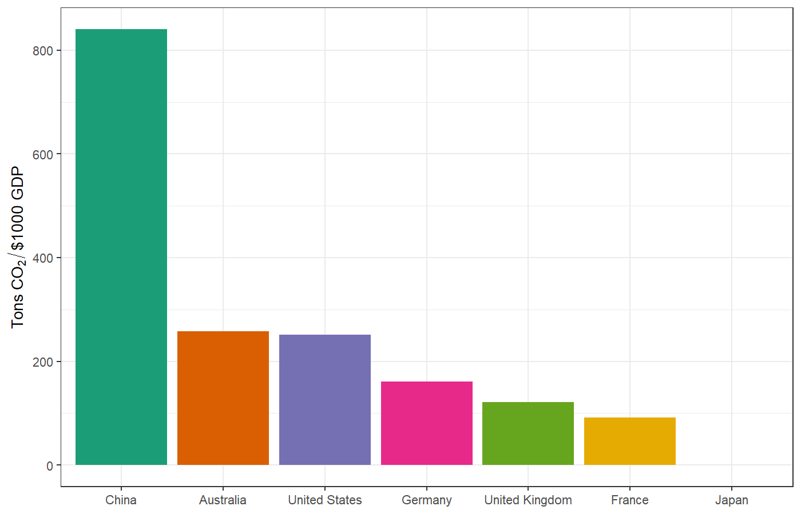
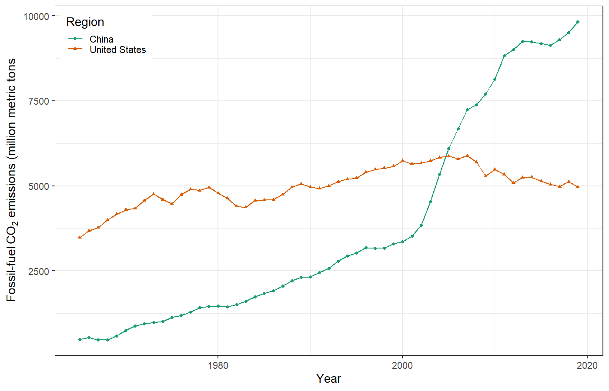
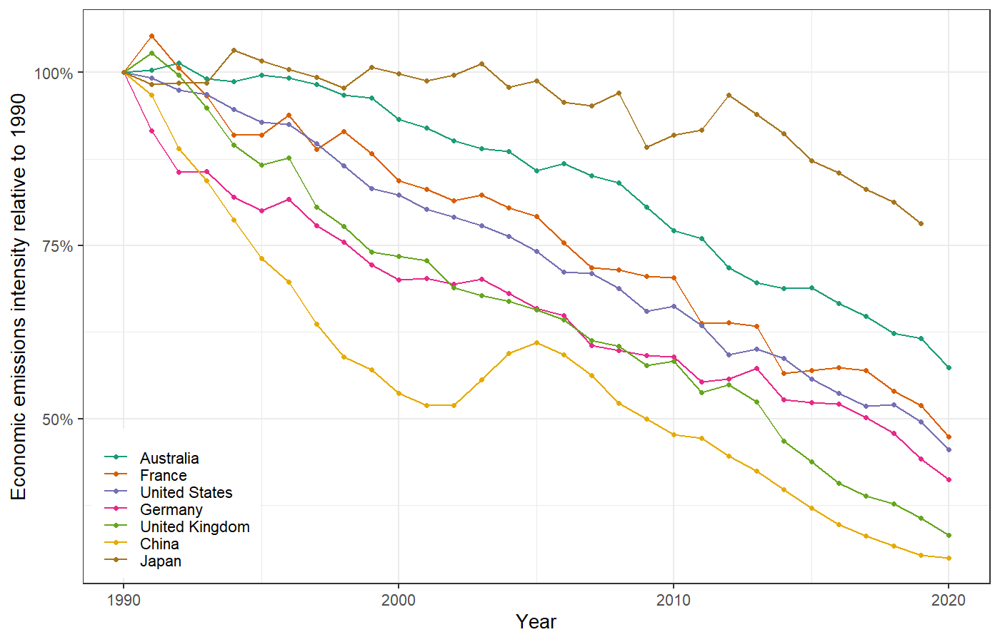
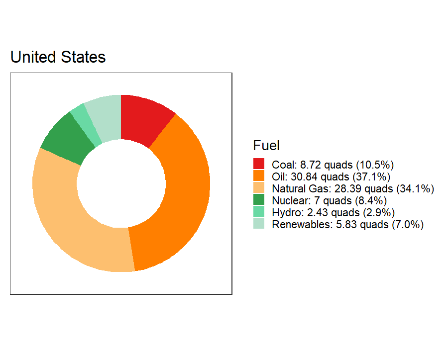

Top-Down Decarbonization
EES 3310/5310
Global Climate Change
Jonathan Gilligan
Class #26: Wednesday, March 24 2021
Considerations on Projections
of Future Emissions
Grain of Salt
- Implied decarbonization rates depend on predictions of P, G, etc.
- Predicting population and economic growth are very tricky and imprecise.
- So take any of these calculations with a grain of salt.
- But are they still useful, despite the uncertainties?
Implied Decarbonization
for Green New Deal
Kaya Identity
\[\color{firebrick}{F} = \color{darkgreen}{P} \times \color{blue}{g}\times \color{mediumorchid}{e} \times \color{crimson}{f}\]
- \(\color{firebrick}{F} =\) emissions (million metric tons (MMT) CO2 per year)
- \(\color{darkgreen}{P} =\) population (billions)
- \(\color{blue}{g} =\) per-capita GDP ($1000 per person)
-
\(\color{mediumorchid}{e} =\) energy intensity of economy (quads / $ trillion)
- Reducing e means increasing energy efficiency
-
\(\color{crimson}{f} =\) carbon intensity of energy supply (MMT CO2 / quad)
- Reducing f means replacing fossil fuels with cleaner energy
US Green New Deal
US Green New Deal
- The Green New Deal has many definitions:
- Resolution in Congress does not give specific emissions targets.
- Bernie Sanders campaigned on a promise to completely eliminate CO2 emissions by 2050 and reduce them 71% by 2030
- \(F(2030) = 1484~\text{MMT}\)
- \(F(2019) = 4965~\text{MMT}\)
- Could we do this in 11 years?
- We would have to cut ef by 13.4% per year.
- Historically, since 1990, ef has dropped 2.5% per year.
How Can We Decarbonize?
Detailed Abatement Options

Image credit: McKinsey Global Institute
Economic Carbon Intensity in 2019

CO2 Emissions 1965–2019

Relative improvement in carbon intensity 1990–2019

Top-Down Analysis for Green New Deal
Projected Energy Use in 2030
- Energy Information Administration top-down projection for energy demand in United States in 2030:
- Total 2030 Primary Energy Use = 88.8 Quads
- Assume P, g, and e are fixed.
- Manage emissions by reducing f
- Switch from fossil fuels to clean energy
Energy Mix in 2019

| Fuel | Quads | % |
|---|---|---|
| Coal | 10.7 | 12 |
| Oil | 35.1 | 39 |
| Natural Gas | 28.9 | 32 |
| Nuclear | 7.2 | 8 |
| Hydro | 2.3 | 3 |
| Renewables | 5.5 | 6 |
| Total | 89.7 | 100 |
Emissions Factors
| Fuel | MMT CO2 per Quad |
|---|---|
| Coal | 94 |
| Oil | 70 |
| Natural Gas | 53 |
| Nuclear | 0 |
| Hydro | 0 |
| Renewables | 0 |
Projected Business as Usual Emissions in 2030
| Fuel | % | Quads | MMT/Quad | MMT CO2 |
|---|---|---|---|---|
| Coal | 12 | 10.6 | 94 | 1004 |
| Oil | 39 | 34.7 | 70 | 2428 |
| Natural Gas | 32 | 28.6 | 53 | 1518 |
| Nuclear | 8 | 7.1 | 0 | 0 |
| Hydro | 3 | 2.3 | 0 | 0 |
| Renewables | 6 | 5.5 | 0 | 0 |
| Total | 100 | 88.8 | NA | 4951 |
Top-down emissions-reduction
| Fuel | % | Quads | MMT/Quad | MMT CO2 |
|---|---|---|---|---|
| Coal | 12 | 10.6 | 94 | 1004 |
| Oil | 39 | 34.7 | 70 | 2428 |
| Natural Gas | 32 | 28.6 | 53 | 1518 |
| Nuclear | 8 | 7.1 | 0 | 0 |
| Hydro | 3 | 2.3 | 0 | 0 |
| Renewables | 6 | 5.5 | 0 | 0 |
| Total | 100 | 88.8 | NA | 4951 |
- Projected emissions for 2030 = 4951 MMT
- If f doesn’t change.
- Emissions goal for 2030 = 1484 MMT
- Must cut by (4951 − 1484) = 3467 MMT
- Start with coal:
- Cut 1004 MMT (10.64 quads)
- 2463 MMT left
- Next, cut gas:
- Cut 1518 MMT (28.59 quads)
- 945 MMT left
- Finally, cut oil:
- Cut 945 MMT (13.49 quads)
- Total energy cuts = 10.64 + 28.59 + 13.49 = 52.72 quads.
Clean Energy Sources
- 11,000 megawatts (MW) for one year = 1 quad
- (See Climate Fix, p. 97)
- Nuclear Power Plant:
- 1000 MW × 75% capacity factor = 750 MW average
- 1 quad per year = 11,000 MW / (750 MW per nuclear plant)
= 14.7 nuclear plants
- Solar Photovoltaic:
- 30 MW × 30% capacity factor = 9 MW average
- 1 quad = 1,200 photovoltaic solar farms
- Wind Turbine:
- 6 MW × 42% capacity factor = 3 MW average
- 1 quad = 4,400 wind turbines
Meeting Green New Deal Goal
- Cut CO2 by 3467 MMT
- 1004 MMT from coal (10.6 quad)
- 1518 MMT from gas (28.6 quad)
- 945 MMT from oil (13.5 quad)
- Total clean energy needed: quads per year
- 53 quads × 15 nuclear plants/quad =
770 nuclear power plants in 11 years
(70 per year) - 53 quads × 1,200 photovoltaic solar farms/quad =
63,000 photovoltaic solar farms in 11 years
(6,000 per year, or 100 per week) - 53 quads × 4,400 wind plants/quad =
232,000 wind turbines in 11 years
(21,000 per year, or 60 per day)
Pielke’s Bottom Line
- Unfeasible to build so much clean energy so quickly
- Expense of building so much clean energy would defeat economic goals
- This is why we don’t have the technology to decarbonize as quickly as politicians and activists have been promising.
But …
- Renewable energy is getting cheaper very quickly
- It may soon be profitable to shut down existing fossil-fuel power plants and replace them with renewables.
Review
Bottom-Up Analysis
- Start with individual Kaya-identity variables:
- P, g, e, f
- Figure out historical rates of change for each
- Gross Domestic Product: \(G = P \times g\)
- Rate of change of \(G\): \(r_G = r_P + r_g\)
- Rate of change of a product is the sum of the rates of change of the factors.
- Use rate of change of G to extrapolate G in the future
Bottom-Up Analysis
Start with individual Kaya-identity variables
-
Start with the policy goal: change in \(F\).
- Figure out implied rate of change of emissions \(r_F\).
Compare to the expected rate of change of GDP \(r_G\).
-
Calculate the implied rate of decarbonizing the economy, \(r_{ef}\):
\[r_{ef} = r_F - r_G\]
Compare implied \(r_{ef}\) to the historical trend in ef to assess the difficulty of meeting the policy goals.
Top-Down Analysis
- Start with macroeconomic estimate of future energy demand E
- Use mix of energy sources and emissions factors to calculate future emissions (F) if the mix of energy sources does not change.
- Your policy has a a goal for F
- Calculate difference between projected future F and policy goal for F.
- Calculate how many quads of fossil-fuel energy you would have to replace with clean energy to meet the policy goal.
- Start with cutting coal, then cut natural gas, and finally cut oil
- Why?
- Figure out how many power plants of different kinds you would have to build to supply the necessary clean energy.